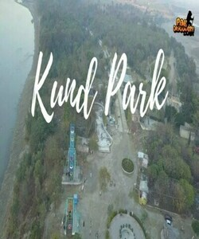
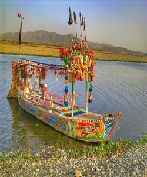

Kund Park (also known as Kund Bear Park), established in 2000, is an animal theme park located in Nowshera, Khyber Pakhtunkhwa, Pakistan. The park is a conservation center and sanctuary for Asian black bears and Himalayan brown bears. It also houses leopards as well as various species of cranes, deer, ducks, parrots, peafowls and pheasants.
Swabi, Khyber Pakhtunkhwa, Pakistan One of the most beautiful and green park for tourist betweet the two rivers of kabul river amd indus river looks like a small Iceland between the rivers..best place to visit with family.

The park was established by World Society for the Protection of Animals (Now known as World Animal Protection) after efforts of Fakhar Abbas, president of WSPA member society, Bioresource Research Centre (BRC). Kund 'Bear' Park served as a home for an Asian black bear confiscated from a bear baiting event following the enforcement of ban in 2001. By December 2004, the park was a retirement home to seven rescued bears, who could never adapt to life in the wild because as tame bears, they are without teeth.
In late July, 2010 Pakistan floods resulted in severe damage at Kund Park. As many as 23 bears that were living in the sanctuary lost when the water rose as high as 60 feet above river level."By early August 2010, it was reported that Babu, Sohrab and Maylu, three of the bears that were housed at Kund Park, were rescued from the flooded area and safely transported to new sanctuary at Balkasar which was still very much under construction.
